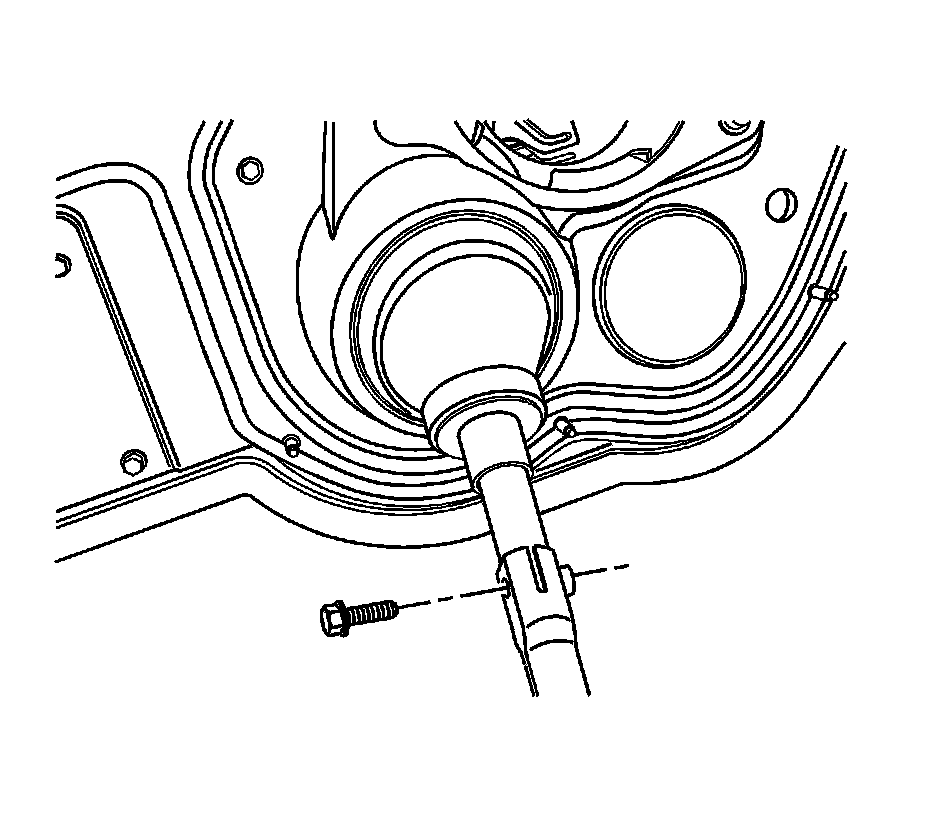
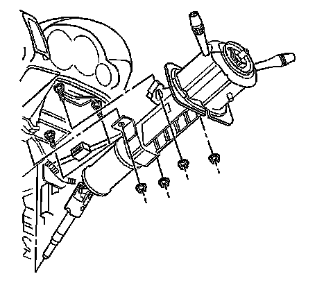

Steering Column Replacement
Steering Column Replacement
Tools Required
J 42640 Steering Column Anti Rotation Pin
Removal Procedure
Caution: Refer to SIR Caution (SIR Caution) .
Notice: Once the steering column is removed from the vehicle, the column is extremely susceptible to damage. Dropping the column assembly on the end could collapse the steering shaft or loosen the plastic injections, which maintain column rigidity. Leaning on the column assembly could cause the jacket to bend or deform. Any of the above damage could impair the columns collapsible design. Do NOT hammer on the end of the shaft, because hammering could loosen the plastic injections, which maintain column rigidity. If you need to remove the steering wheel, refer to the Steering Wheel Replacement procedure in this section.
Notice: The front wheels of the vehicle must be maintained in the straight ahead position and the steering column must be in the LOCK position before disconnecting the steering column or intermediate shaft. Failure to follow these procedures will cause improper alignment of some components during installation and result in damage to the SIR coil assembly.
1. Turn the steering wheel so that the front wheels are pointing straight ahead.
2. Turn the ignition lock cylinder to the lock position and remove the ignition key.

3. Insert anti-rotation pin J 42640 into the steering column access hole in order to lock the steering column.
4. Disable the supplemental inflatable restraint (SIR) system. Refer to SIR Disabling and Enabling (Service and Repair) .

5. Remove the center intermediate steering shaft bolt. Refer to Intermediate Steering Shaft Replacement - Center (Intermediate Steering Shaft Replacement - Center) .
Important: Mark the relationship of the center intermediate steering shaft to the upper intermediate steering shaft in order to ensure proper alignment during installation.
6. Disconnect the center intermediate steering shaft from the upper intermediate steering shaft.
7. Remove the driver knee bolster bracket. Refer to Driver Knee Bolster Bracket Replacement (Left Hand Drive) (Service and Repair)Driver Knee Bolster Bracket Replacement (Right Hand Drive) (Service and Repair) .
8. Disconnect any steering column electrical harness connectors as needed.

9. Remove the steering column nuts.
Important: The steering column is removed with the upper intermediate steering shaft attached.
Important: Mark the relationship of the upper intermediate steering shaft to the steering column in order to ensure proper alignment during installation.
10. Remove the steering column from the vehicle.
11. Transfer any parts as needed.
Installation Procedure
1. Install the steering column to the vehicle.
Notice: Refer to Fastener Notice (Fastener Notice) .
Important: Start all the nuts by hand before finalizing any torques.
2. Install the steering column nuts.
Tighten the nuts to 25 N.m (18 lb ft).
3. Connect any steering column electrical harness connectors as needed.
4. Install the driver knee bolster bracket. Refer to Driver Knee Bolster Bracket Replacement (Left Hand Drive) (Service and Repair)Driver Knee Bolster Bracket Replacement (Right Hand Drive) (Service and Repair) .
5. Install the center intermediate steering shaft bolt. Refer to Intermediate Steering Shaft Replacement - Center (Intermediate Steering Shaft Replacement - Center) .
6. Remove anti-rotation pin J 42640 .
7. Enable the SIR system. Refer to SIR Disabling and Enabling (Service and Repair) .